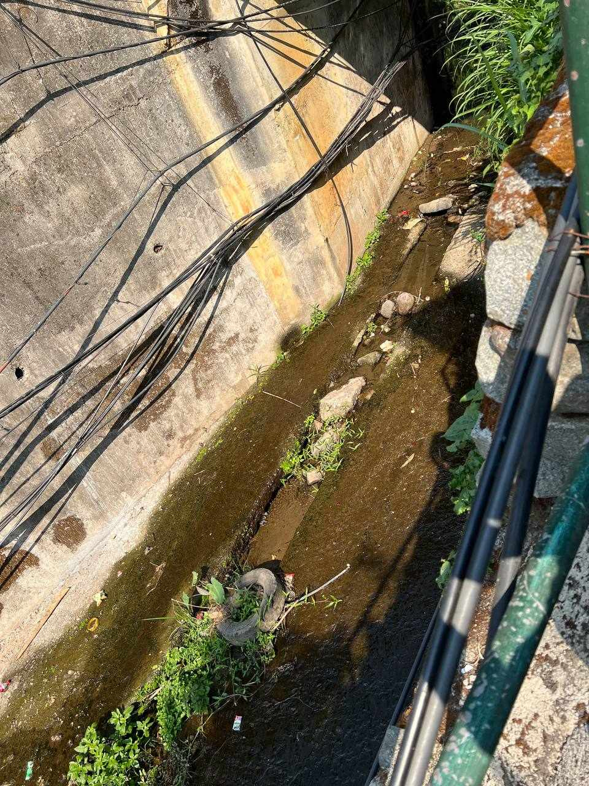
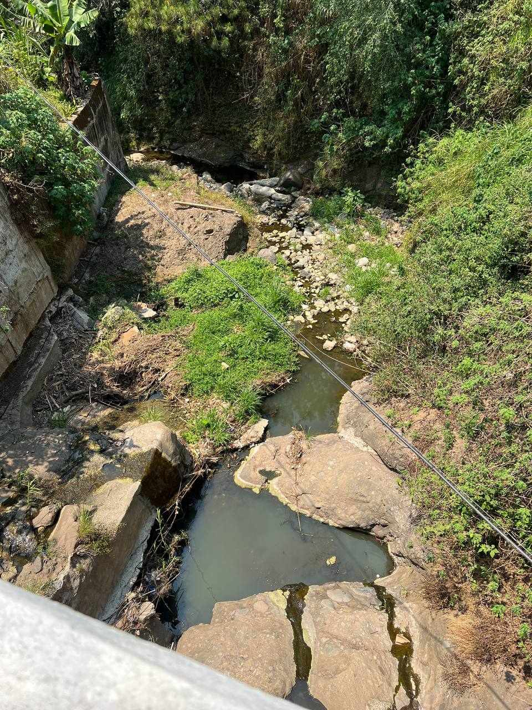
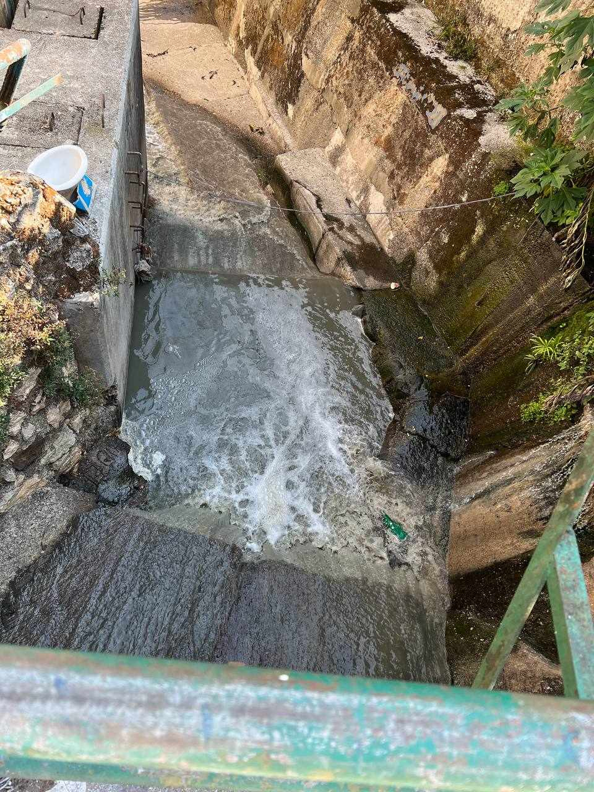
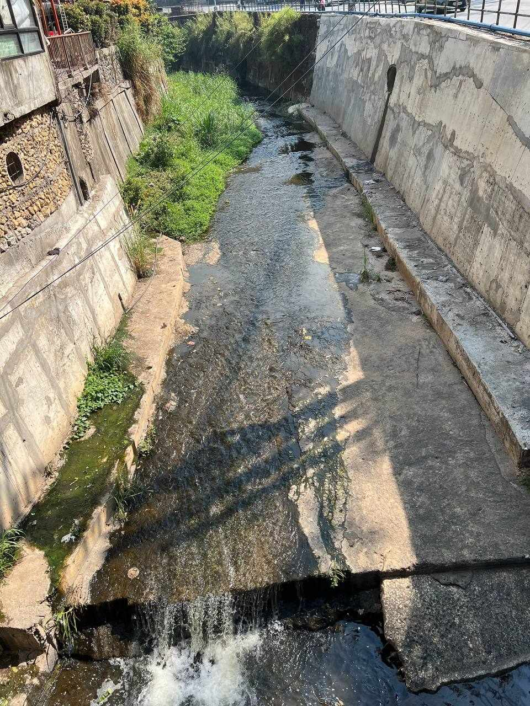
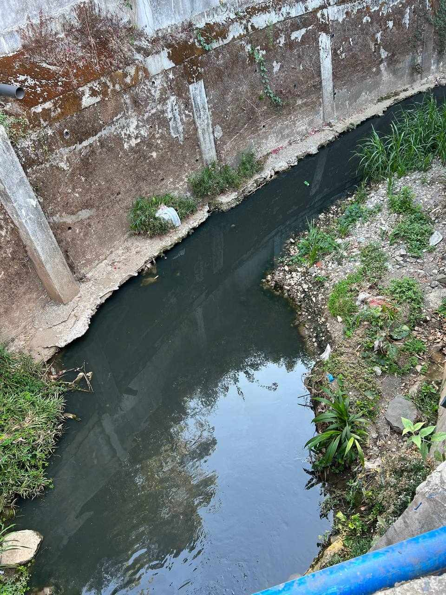

"Exploring Baguio's Rivers: A Visual Journey"
-

Balili river
Serene and meandering, Balili River flows through verdant landscapes, offering a tranquil escape amidst nature's embrace in Baguio.
-

Guisad
Guisad River dances through the heart of Baguio, its waters weaving past bustling streets and quiet corners, adding a touch of natural beauty to the urban landscape.
-

Camp 7
Emerging from the rugged terrain of Camp 7, this river cascades down rocky slopes, its swift currents mirroring the adventurous spirit of the surrounding mountains.
-

Bued
Originating from the highlands, Bued River journeys through picturesque valleys and lush forests, inviting exploration and providing sustenance to the land it traverses.
-

Trancoville
Trancoville River winds its way through the quaint neighborhood of Trancoville, its gentle flow echoing the peaceful ambiance of this residential area in Baguio.
-

Slaughter House
Named after the nearby slaughterhouse, this river flows with quiet dignity, carrying with it the essence of the city's history and the resilience of its people.